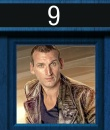
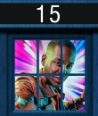
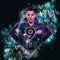
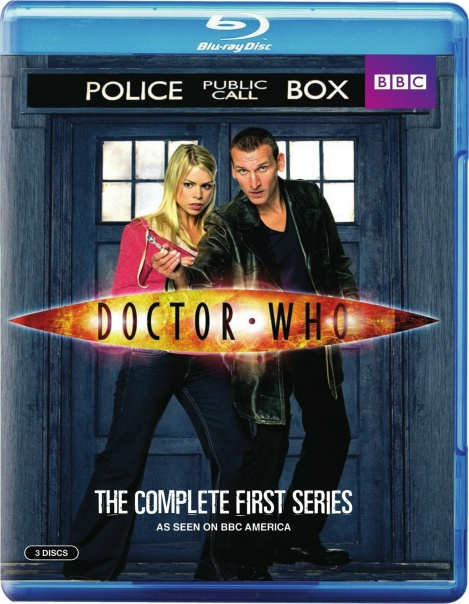

Таблица коллекции |  Навигация по канону |  Связные экранизации |
Таблица коллекции | Навигация по канону | Связные экранизации |







Эра Девятого Доктора
Актёр: Кристофер Экклстон

Возрождённый «Доктор Кто» балансирует между масштабной фантастикой и личными историями, делая ставку на человеческие переживания. Доктор — трагический одиночка, последний из Повелителей времени, а Роза становится его эмоциональным якорем. Сквозная арка и энергичный ритм задают новый стиль сериала, сочетая уважение к классике с современными решениями.
Наш плейлист сезона в ВК